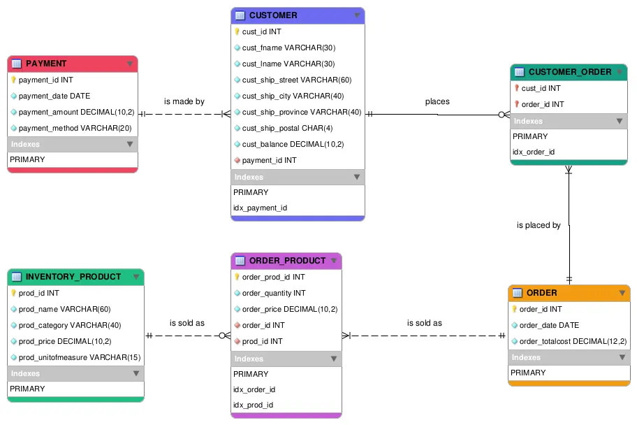

DATAMA2 Activity 1 gave four business rules about customers, orders and payments, an attribute list for each entity, and one tool: MySQL Workbench. The deliverable was a Crow's Foot model plus a data dictionary, saved as a PDF.
Reading the grammar
The rules follow a fixed pattern. The many side reads "one or many CUSTOMER" or "zero or many ORDER", and the one side reads "a PAYMENT" or "an ORDER". "A" and "an" mean exactly one. Rule 4 says one or many customers make a payment and a payment is made by one or many customers. Read with that grammar, PAYMENT sits on the one side. That is my reading, not a confirmed answer.
When the attribute list disagrees with a rule
The ORDER entity listed cust_id, but rule 1 made customers and orders many-to-many. A many-to-many link cannot live in one foreign key, so I followed the rule: a bridge entity between CUSTOMER and ORDER, and no cust_id in ORDER. The business rules are the requirements. The attribute list only offers possible attributes.
Building it
The finished model has six tables. I wrote them as a CREATE script, ran it on a private MySQL 8 server, and drew the diagram in Workbench from that script. Each table has its own colour, the lines are straight and the Indexes lists are open. A relationship line attaches at the vertical middle of both tables, so two connected tables need equal middles to get a straight line.
Open the full diagram

ORDER is an SQL reserved word. I kept the name from the brief and quoted it in the script with backticks.